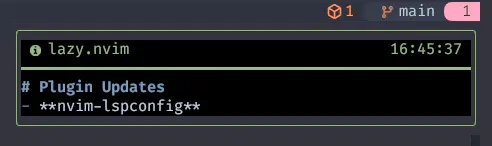
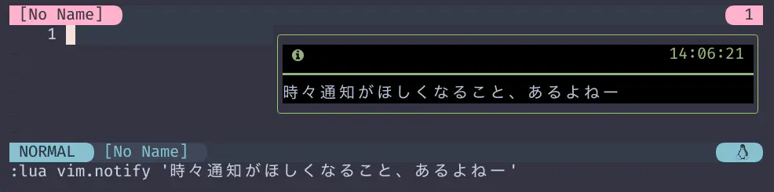
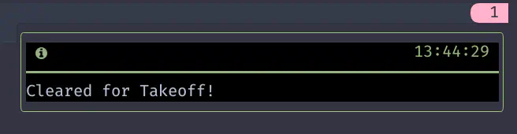
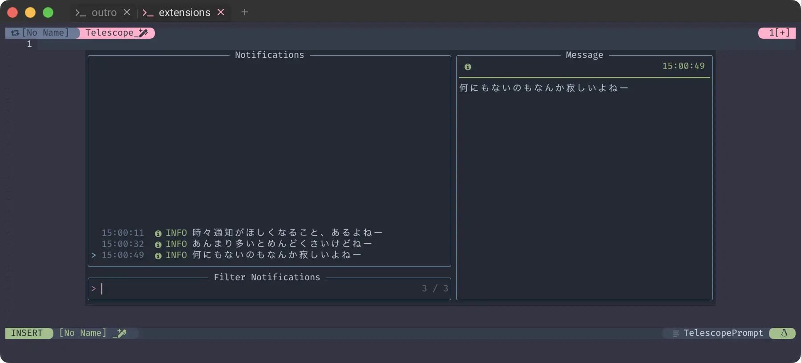

nvim-notify
前回は暑いとか言ってた気がしますが、なんか急に寒くなってきました🥶
もう2023年もだいぶ後半だもんねー。
まだ時々暑いけどねー😆
...。🙂
今だ❗nvim-notify❗❗
A fancy, configurable, notification manager for NeoVim
NeoVim のための、設定可能でファンシーな通知マネージャ
Credit to sunjon for the design that inspired the appearance of this plugin.
細かいことはいいんです😉
Installation
もう簡単だとは思うんですが、それでも順番に辿っていきましょう😇
Prerequisites
Make sure to use a font which supported glyphs (icons), font can be found here.
必ずグリフ（アイコン）をサポートしているフォントを使用してください。フォントはこちらで見つけることができます。
フォントはもう何度も出てきているので大丈夫でしょ❓
24-bit colour is required, which can be enabled by adding this to your init.lua
24ビットカラーが必要です。init.luaに以下を追加することで有効にできます。
vim.opt.termguicolors = true
24ビットカラーについては、このサイトでも termguicolors ページで取り上げてます。
...いるんですが、このサイトで取り上げたvim.api.nvim_set_optionは、もうだいぶ以前からdeprecatedとされています。
Nvim deprecated
The items listed below are deprecated: they will be removed in the future.
They should not be used in new scripts, and old scripts should be updated.
以下の項目は非推奨であり、将来削除される予定です。
新しいスクリプトでは使用せず、古いスクリプトは更新してください。
- nvim_set_option() Use nvim_set_option_value() instead.
なんだかこれまでよりも冗長に見えているので、いまいち自信が無いんですが...😅
nvim_set_option_value()を使用する場合は
vim.api.nvim_set_option_value('termguicolors', true, { scope = 'global' })
みたいな❓
nvim_set_option()に限らず、"nvim_なんちゃら_set_option" についてはnvim_set_option_valueに統一されるそうです。
- nvim_buf_set_option() Use nvim_set_option_value() instead.
- nvim_win_set_option() Use nvim_set_option_value() instead.
NVIM v0.11.0とかになるとわからないけど、次のNVIM v0.10.0でも削除されていないので、まだしばらくはだいじょーぶ😙
...たぶん🥹
とは言ってもやっぱり流れには乗っていかなきゃね❗
nvim_set_option_valueについては次回取り上げることにします😉
Then you can install nvim-notify with the package manager of your choice.
その後、お好みのパッケージ・マネージャーで nvim-notify をインストールしてください。
念のためlazy.nvimでのインストールを補足しますが、特に難しいこともありませんね😇
Usage
簡単だ❗
Simply call the module with a message!
メッセージを添えてモジュールを呼び出すだけだ！
require("notify")("My super important message")
Other plugins can use the notification windows by setting it as your default notify function
デフォルトの通知機能として設定することで、他のプラグインも通知ウィンドウを使用することができます。
ということで、通知はすべてnvim-notifyにお願いしよう❗😆
{
'rcarriga/nvim-notify',
+ config = function() require 'extensions.nvim-notify' end,
},
そしたらもう呼び出すだけだ❗
前回の使い回しだけど、こんなのとか❗ 
通知で遊んでみたりとか❗ 
しれっとこんなのも仕込まれていたりとか😮 
これだけ動いていれば、確認はもう充分すぎるでしょう☺️
Viewing History
時々、「あの時に出ていた通知、なんだったんだ...😣」ってなこともあるかと思いますが、 このコードを追加しておけばだいじょーぶ😉
If you have telescope.nvim
installed then you can use the notify extension to search the history:
telescope.nvim がインストールされていれば、
notify拡張機能を使って履歴を検索することができます：
local telescope = require('telescope')
telescope.load_extension 'notify'
vim.keymap.set('n', '<leader>fn', function()
telescope.extensions.notify.notify()
end)
あ、もちろん<leader>fnは好きに変えてもらえばおっけーです😸

ほらねー。
Now and Then
ということで、nvim-notifyはこれで完了です❗
正直、ちょっと端折りすぎてるかなーっていう感じは否めませんが、基本的にはこれで大丈夫なはずです。 あとは手元で色々試してみて❗
...だって、今日はこれだけじゃないもんね❓😉
時々 1 不思議に思う。
このニュースを取り上げないわけないもんね❗😆
The Beatles announce release of “final” song ‘Now And Then’ and expanded ‘Red’ and ‘Blue’ albums
“There it was, John’s voice, crystal clear,” said McCartney.
"John の声、透き通っていたよ" と McCartney。
“It’s quite emotional. And we all play on it, it’s a genuine Beatles recording. In 2023 to still be working on Beatles music, and about to release a new song the public haven’t heard, I think it’s an exciting thing.”
"とてもエモーショナルだ。僕たち全員が参加している、正真正銘の Beatles のレコーディングなんだ。 2023年、まだ Beatles の音楽に取り組んでいて、まだ人々が聴いたことのない新曲をリリースしようとしている。"
そう、本当に不思議なんだ。
現実は自分の手で作るものだし、常に選択できることは分かっている。
しかし、運命は一体どの程度まで決まっているものなんだろう？
Starr agreed: “It was the closest we’ll ever come to having him back in the room so it was very emotional for all of us. It was like John was there, you know. It’s far out.”
Starr も同意している。
"彼が部屋に戻ってくるというのは、これまでで一番身近なことだった。 まるで John がそこにいるようだった。遥か彼方だ。"
人生には分かれ道がつきものなんだろうか？
2つの道はどちらも前もって運命が決まっているんだろうか？
わたしが生まれた時にはもう遥か彼方だったけど、John はわたしの心を救ってくれた人。
「本当にありがとう❗」届くといいな🤗
どっちへ行こうかと悩むとき、道は数限りなくある。
その中から1つを選ぶんだけど、それが時々、ものすごく奇妙だったりする...。
1: Now and Then (by The Beatles): "Now and Then "は John Lennon の曲で、元々は1979年頃にピアノ/ヴォーカルのソロ・デモとしてレコーディングされた。 The Beatles の他のメンバーが後にオーバーダブを施した後、 この曲はバンドのファースト・シングル "Love Me Do"（1962年）のニュー・ミックスと対になったダブルAサイド・シングルとして、 2023年11月2日に単独でリリースされる予定だ❗🎉 このリリースは、コンピレーション "1962-1966(The Red Album)" と "1967-1970(The Blue Album)" の再リリースと共に行われ、 後者には "Now and Then" も収録される。Wikipediaより